-
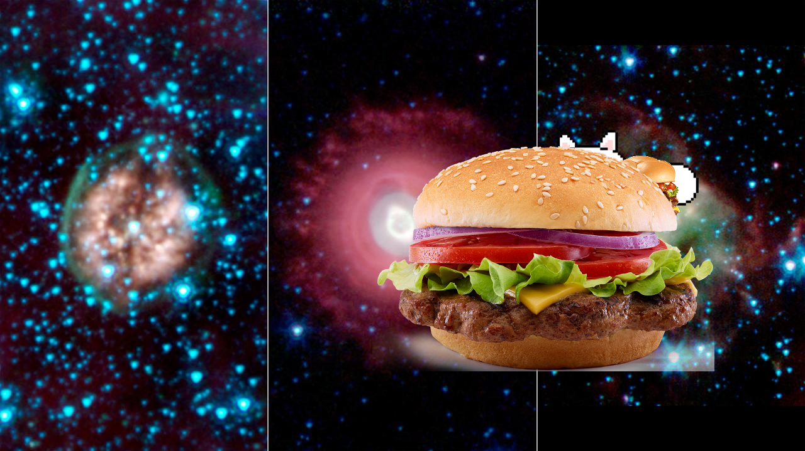An Unexpected Discovery, ??? – Death Beckons Three Aging Stars.
-
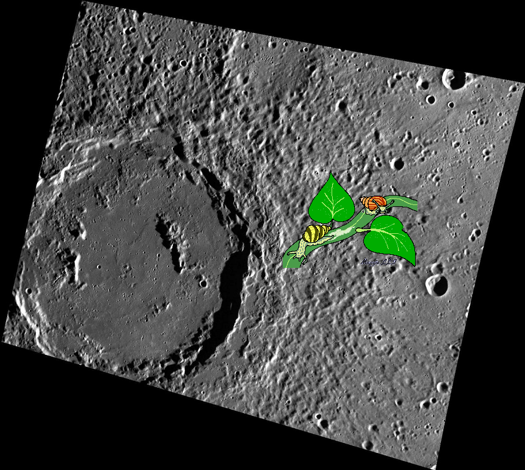A Mystery @ The Stars and Stripes Forever
-
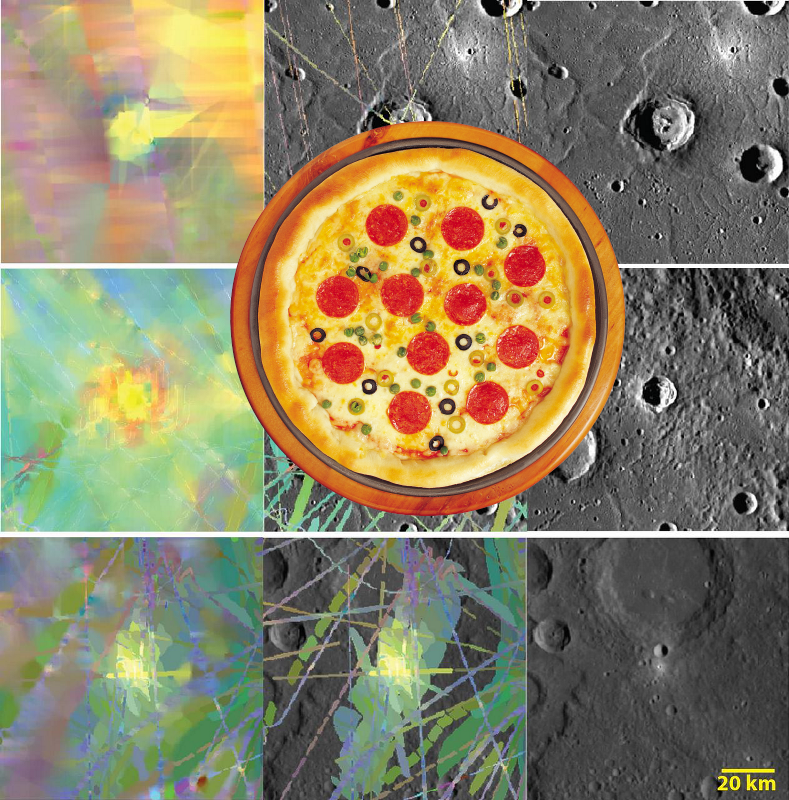Something Strange + One a Penny, Two a Penny, Bright, Fresh Crater.
-
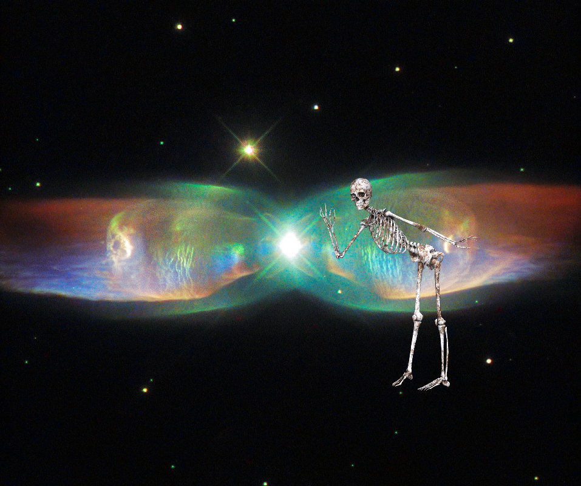Something Strange @ Hubble Sees the Wings of a Butterfly: The Twin Jet Nebula.
-
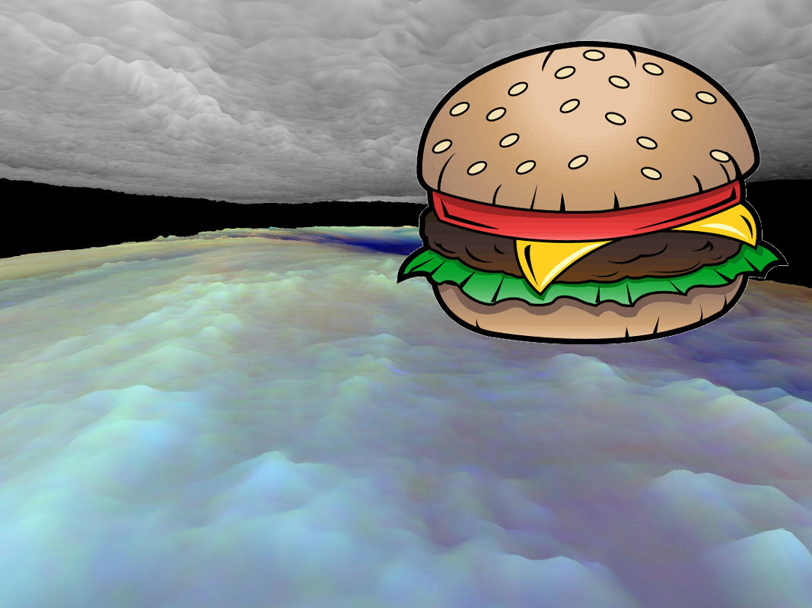An Unexpected Discovery ; Three dimensional Visualization of Jupiter Equatorial Region.
-
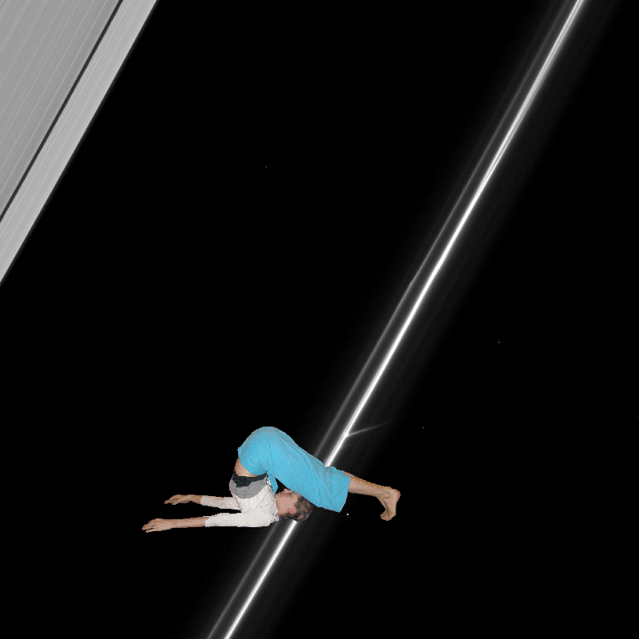Something Strange + Fascinating F Ring!
-
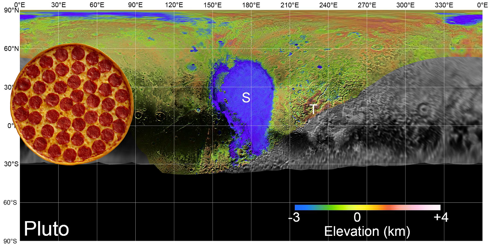A Mystery – Pluto's Surface in Detail
-
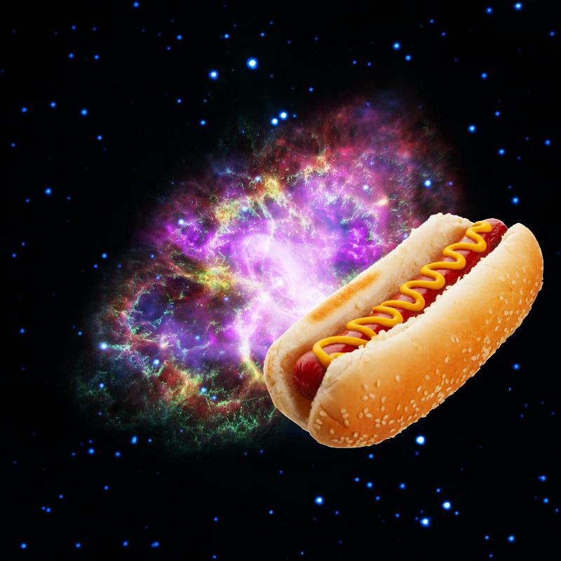An Unexpected Discovery + Observatories Combine to Crack Open the Crab Nebula.
-
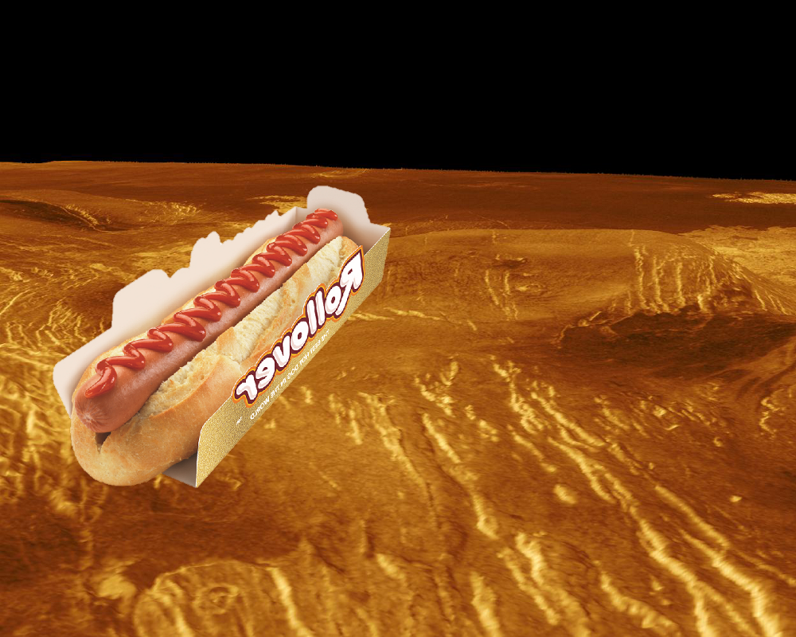Something Strange + Venus - 3-D Perspective View of Idem-Kuva!
-
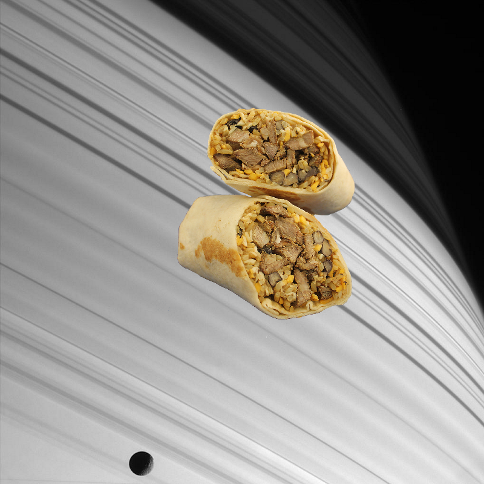An Unexpected Discovery @ Sun-striped Saturn
-
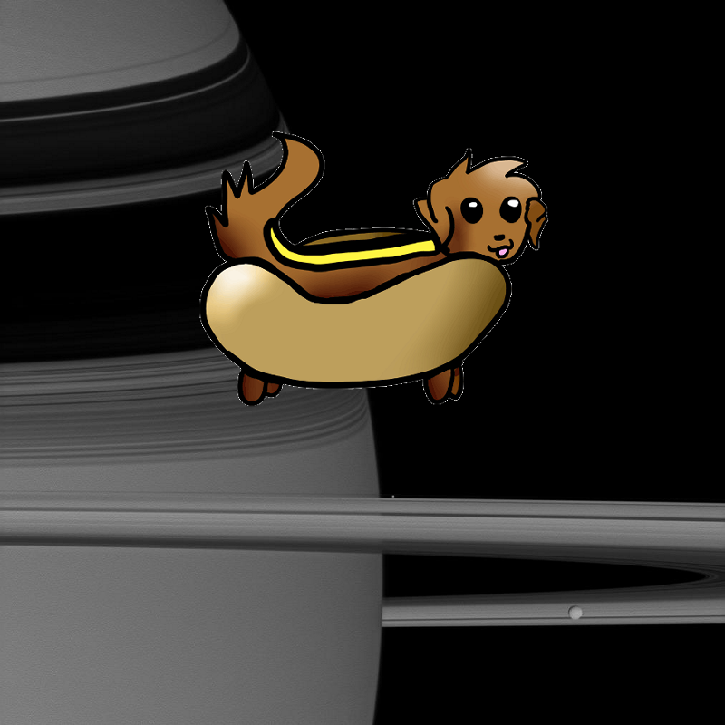An Unexpected Discovery on Gathering of Moons.
-
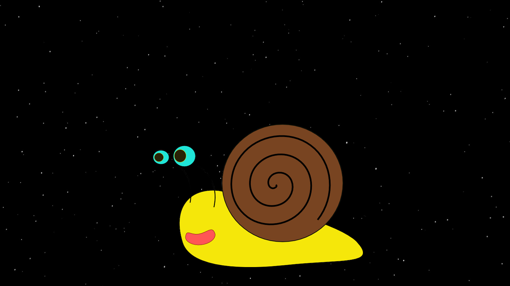Something Strange on Super Earth Reveals Itself to Spitzer Artist Animation!
-
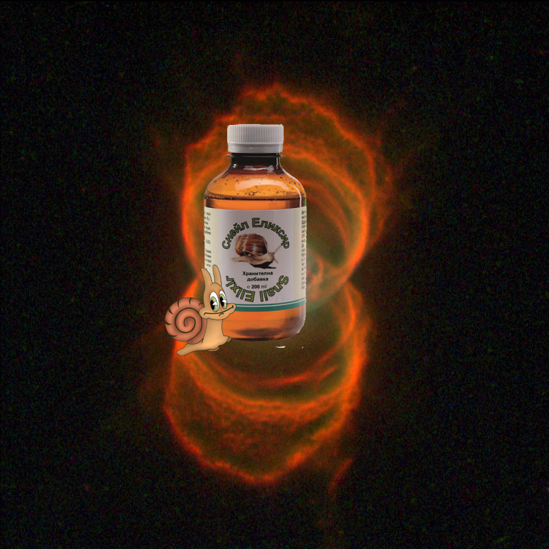A Mystery – Hubble Finds an Hourglass Nebula around a Dying Star.
-
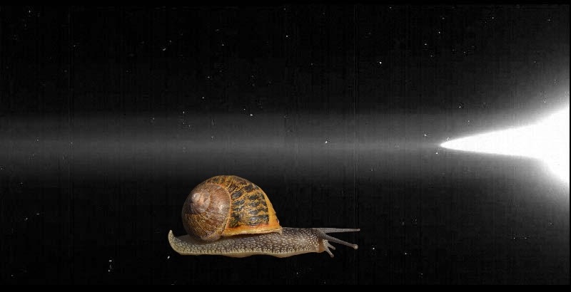An Unexpected Discovery @ Jupiter Gossamer Ring
-
 A Mystery | Neptune in Primary Colors
A Mystery | Neptune in Primary Colors -

-
 An Unexpected Discovery | ARC-1989-A89-7006!
An Unexpected Discovery | ARC-1989-A89-7006! -
 An Unexpected Discovery | Rosetta at Comet.
An Unexpected Discovery | Rosetta at Comet. -
 Something Strange + The Tarantula Nebula
Something Strange + The Tarantula Nebula -
 A Mystery | Venus - Rhea Mons Volcano!
A Mystery | Venus - Rhea Mons Volcano! -

-
 Something Strange, An Unexpected Discovery | Highest Point on the Moon.
Something Strange, An Unexpected Discovery | Highest Point on the Moon. -
 An Unexpected Discovery + Canyon in DCS Color.
An Unexpected Discovery + Canyon in DCS Color. -
 Something Strange ; NASA Galaxy Mission Celebrates Sixth Anniversary!
Something Strange ; NASA Galaxy Mission Celebrates Sixth Anniversary! -
 Something Strange on A Colorful Landing on Pluto
Something Strange on A Colorful Landing on Pluto -
 An Unexpected Discovery on Jupiter Ring System!
An Unexpected Discovery on Jupiter Ring System!